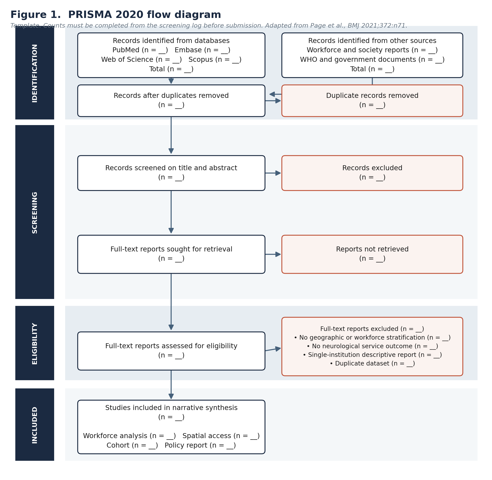
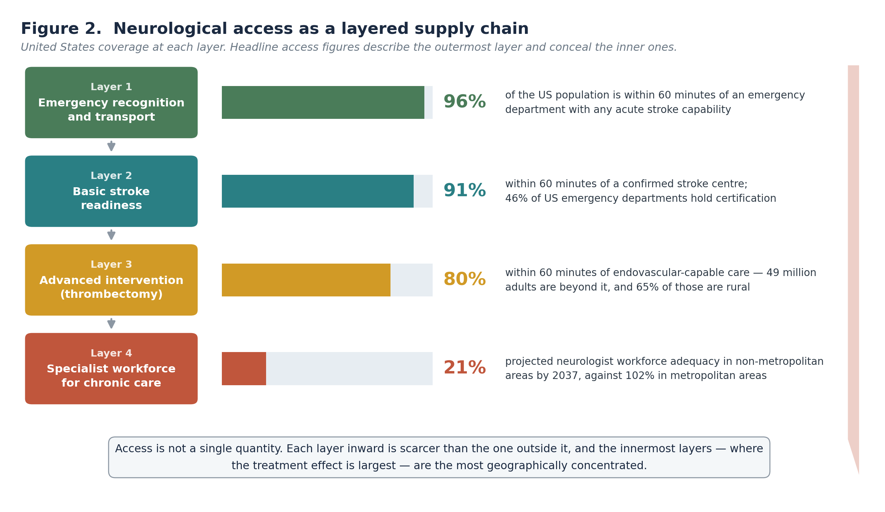
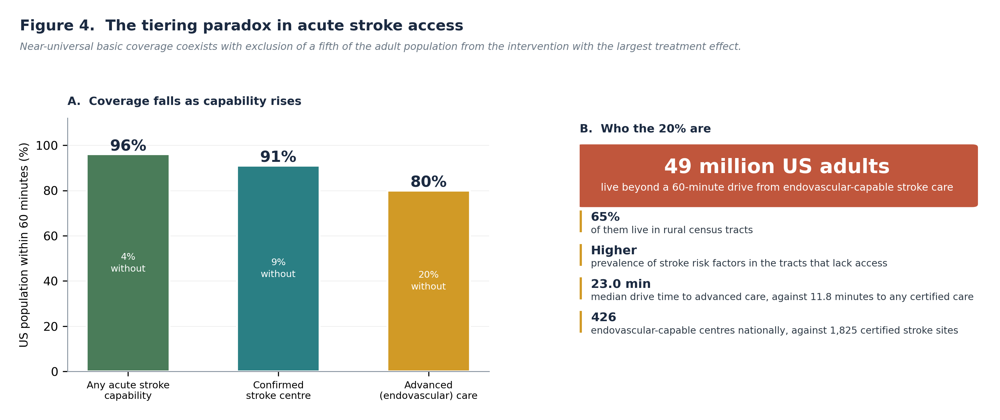
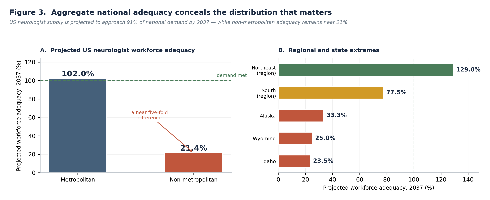
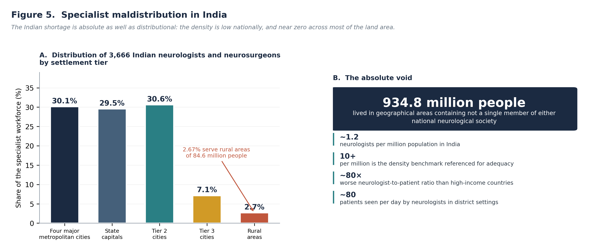
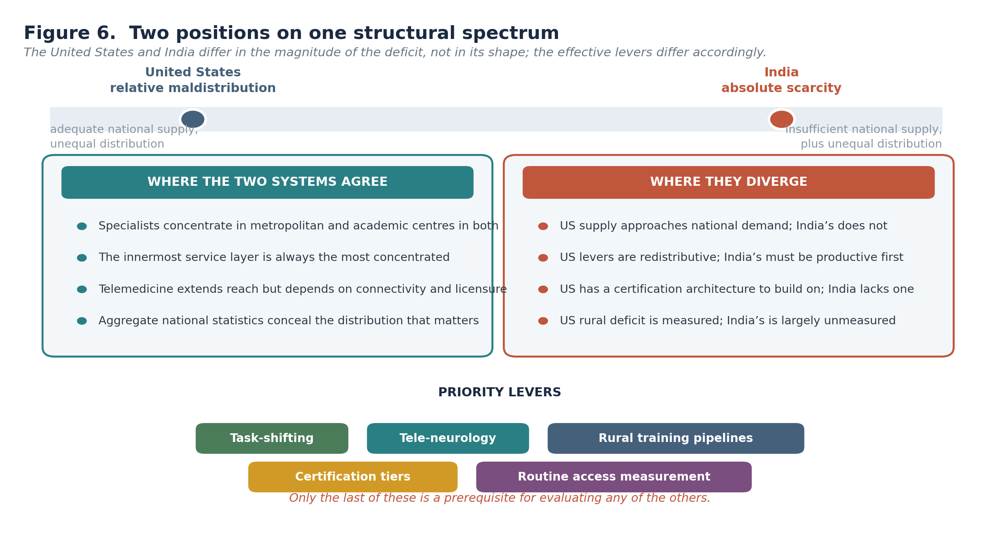

Am J Res Innov. 2026;1(1) · Review Article · Published online first · Open Access
Corresponding author: Corresponding author: Saniya Sadaf Khan · info@lifelineemed.com
Background: Access to neurological care is routinely reported as a single quantity — the proportion of a population within reach of a service. This framing obscures the structure of the problem. Neurological care is delivered through a layered supply chain, from emergency recognition through basic stroke readiness to advanced intervention and long-term specialist follow-up, and each layer inward is scarcer than the one outside it.
Objective: To synthesise evidence on the geographic distribution of the neurological workforce and of service infrastructure in the United States and India; to determine at which layer of the supply chain access fails; and to identify which interventions are appropriate to each country’s structural position.
Methods: A structured review of PubMed, Embase, Web of Science and Scopus was conducted for the period January 2010 to July 2026, supplemented by hand-searching of professional society workforce reports, World Health Organization publications and government documents. Eligible sources reported neurological workforce distribution, spatial access to neurological services, or service outcomes stratified by geography. Evidence was integrated by thematic narrative synthesis; reporting follows PRISMA 2020 principles.24
Results: In the United States, coverage falls monotonically as capability rises. Approximately 96% of the population lies within 60 minutes of an emergency department with any acute stroke capability and 91% within 60 minutes of a confirmed stroke centre;5,6 but roughly 20% of adults — some 49 million people, of whom 65% are rural — live beyond a 60-minute drive from endovascular-capable care.7 Median drive time is 11.8 minutes to any certified stroke care but 23.0 minutes to advanced care, and only 426 endovascular-capable centres exist against 1,825 certified stroke sites.7 The chronic-care layer is weakest of all: national neurologist workforce adequacy is projected to reach 91.2% by 2037, yet non-metropolitan adequacy is projected at 21.4% against 102% in metropolitan areas.3 India occupies a structurally different position. With approximately 1.2 neurologists per million population against a referenced adequacy benchmark of 10 or more per million,10 the deficit is absolute rather than distributional; an analysis of 3,666 members of the two national neurological societies found that not a single member resided in geographical areas containing 934.8 million people, with 2.67% serving rural areas of 84.6 million.11
Conclusions: Headline access statistics describe the outermost layer of the supply chain and conceal the inner ones. In both countries the layer with the poorest coverage is the layer at which the treatment effect is largest. The United States and India are not different problems but two positions on a single structural spectrum: the American deficit is redistributive and can be addressed by incentives, telemedicine and task-shifting, whereas the Indian deficit is productive and requires training capacity before redistribution becomes meaningful. In both, routine measurement of access by layer is the precondition for evaluating any intervention, and neither country currently reports it.
Keywords: neurology workforce; health services accessibility; rural health; stroke systems of care; thrombectomy; telemedicine; task-shifting; India; United States; health equity
Statements about access to neurological care are usually made in the singular. A population is described as having access or lacking it; a percentage is quoted; a map is shaded. The convention is convenient and, for most purposes, misleading.
Neurological care is delivered through a sequence of distinct capabilities, each with its own geography. Recognising a stroke and transporting the patient requires an emergency medical system. Administering thrombolysis requires a hospital with imaging and a protocol. Performing mechanical thrombectomy requires an interventional suite, a trained proceduralist and sufficient case volume to maintain competence. Managing epilepsy, multiple sclerosis or Parkinson’s disease over decades requires a neurologist within reachable distance, repeatedly.
These are not degrees of the same thing. They are different services with different capital requirements, and they are distributed differently. A population may sit comfortably inside the outermost layer and entirely outside the innermost. When access is reported as a single number, that number almost always describes the outermost layer, because that is the layer that is easiest to satisfy and most flattering to report.
The two countries are ordinarily treated as belonging to separate literatures: one a high-income system with distributional inefficiency, the other a low- and middle-income system with absolute scarcity. This review argues that the separation obscures a shared structure.
In both, specialists concentrate in metropolitan and academic centres. In both, the innermost service layer is the most concentrated. In both, aggregate national statistics conceal the distribution that determines outcomes. What differs is position on the spectrum, not shape: the United States has a national supply approaching national demand with severe internal maldistribution, while India has neither adequate supply nor adequate distribution.
That distinction is not academic. It determines which interventions can work. Redistributive levers — rural incentives, telemedicine, licensure reform — presuppose a supply that exists somewhere and can be moved or extended. Where supply is absent in aggregate, those levers redistribute a deficit.
This review therefore sets out to:
This is a structured review with thematic narrative synthesis. Narrative synthesis was selected a priori because the constituent evidence spans workforce projection models, geospatial drive-time analyses, administrative claims cohorts, professional society censuses and policy documents, with incompatible units of analysis — full-time equivalents, census tracts, drive-time isochrones, society membership and per-capita densities. Reporting follows the PRISMA 2020 statement.24
PubMed, Embase, Web of Science and Scopus were searched for records published between 1 January 2010 and 31 July 2026. The search combined a workforce and infrastructure block, a neurological condition block, a geography block and an access block. Because workforce data frequently appear outside the indexed literature, the search was supplemented by hand-searching of American Academy of Neurology workforce reports, Indian Academy of Neurology and Neurological Society of India publications, World Health Organization documents and national health workforce statistics. The full architecture appears in Table B.
Eligible sources reported, for the United States, India or in comparative international analysis, one or more of: neurological or neurosurgical workforce counts, densities or projections; spatial access measures to neurological services; stroke centre or telestroke capability distribution; travel time or distance to neurological care; or clinical outcomes stratified by geographic access. Full criteria appear in Table C.
Records were screened on title and abstract, followed by full-text assessment. Quality was appraised using design-appropriate instruments: the Newcastle–Ottawa Scale for observational studies, AMSTAR-2 for evidence syntheses, and for geospatial and workforce modelling studies a structured appraisal of the transparency of assumptions, the currency of the underlying facility or workforce registry, and whether sensitivity analyses were reported. Appraisal informed synthesis weight rather than exclusion.
Data were extracted against the framework in Table D and mapped onto the four-layer model described in Section 3.1. Where sources reported the same construct using different units, both the original metric and its layer assignment were recorded, and no attempt was made to convert between units.

Synthesis of the retrieved evidence supports organising neurological access into four layers of increasing capability and decreasing availability: emergency recognition and transport; basic stroke readiness; advanced intervention; and specialist workforce for chronic care. The layers are ordered by capital and personnel intensity, and coverage falls monotonically across them.

The outer layers represent real and underacknowledged progress. Of 5,587 United States emergency departments, 2,563 (46%) were located in a certified stroke centre — 691 acute stroke-ready hospitals, 1,505 primary stroke centres and 367 thrombectomy-capable or comprehensive centres. Of those certified centres, 55% also held telestroke capacity; among the 3,024 non-certified departments, 36% had telestroke.5
The resulting population coverage is high. An estimated 91% of the United States population lies within 60 minutes of a confirmed stroke centre by ground emergency medical services, 90% within 60 minutes of a telestroke-capable emergency department, and 96% within 60 minutes of a department with either capability.5,6 Regional variation is modest, ranging from 1% of the population without access in the Middle Atlantic to 9% in the West Mountain states.6 Against a 2011 baseline at which nearly 20% of Americans lacked timely access to thrombolysis-capable hospitals,5 this represents substantial system improvement.
Any account of rural neurological disadvantage that ignores this is incomplete. The outer layers have largely been solved.
The picture changes at the point where the intervention becomes most valuable.
Analysis of drive times from population-weighted centroids of all 72,517 contiguous United States census tracts to 1,825 certified stroke care sites and 426 endovascular-capable sites found a median drive time of 11.8 minutes (IQR 7.6–21.6) to any certified stroke care but 23.0 minutes (IQR 12.6–53.9) to advanced care. Approximately 20% of the United States adult population — around 49 million people — resided in census tracts beyond a 60-minute drive from advanced stroke care, and 65% of those were rural. Tracts lacking timely access had a higher prevalence of stroke risk factors than those with it.7
Two features of this deserve emphasis. First, the interquartile range for advanced care extends to 53.9 minutes against 21.6 minutes for any certified care — the distribution is not merely shifted but far more dispersed, which is the statistical signature of a service concentrated in a limited number of locations. Second, the populations excluded are those with the highest prevalence of the risk factors that generate the need.
Mechanical thrombectomy has among the largest treatment effects available in acute neurology. The layer of the supply chain with the poorest geographic coverage is therefore the layer at which the marginal patient stands to gain most. This inversion — coverage falling as treatment effect rises — is the central finding of this review.

The innermost layer is the weakest, and its weakness is systematically obscured by national aggregation.
Workforce projections indicate United States neurologist supply rising from 21,010 full-time equivalents in 2024 to 23,310 in 2037, a 10.9% increase, against demand rising from 23,720 to 25,560, a 7.8% increase. National adequacy accordingly improves from 88.6% to 91.2%.3 Read alone, that trajectory suggests a problem in slow resolution.
Disaggregated, it does not. By 2037, projected adequacy is 21.4% in non-metropolitan areas against 102% in metropolitan areas — a near five-fold difference, with metropolitan demand fully met while non-metropolitan areas retain approximately one-fifth of the required workforce. Regional projections range from 129% in the Northeast to 77.5% in the South, and the lowest state-level projections are Idaho at 23.5%, Wyoming at 25.0% and Alaska at 33.3%. In 2024, neurology ranked 29th of 35 specialties for physician workforce adequacy.3
Corroborating measures point the same way. Rural areas have been estimated to have approximately 80% lower geographic access to neurologists than urban areas,4 and among Medicare beneficiaries with a neurological condition, 21% of rural residents had access to a nearby specialist against 27% of urban residents.4 Reported wait times for new neurology appointments are among the longest of any specialty.4

India is frequently described as having a maldistribution problem. The description is accurate but incomplete, because it presupposes a supply adequate in aggregate.
India has approximately 1,800 neurologists trained to doctorate level serving a population of about 1.45 billion, a density of roughly 1.2 per million against a referenced adequacy benchmark of 10 or more per million.10 Neurological conditions affect an estimated 30 million people in India, and the country records approximately 1.8 million new strokes annually.10 The World Health Organization’s global neurology assessment describes India’s neurologist-to-patient ratio as approximately eighty times worse than that of high-income countries.12
Distribution compounds scarcity rather than causing it. An analysis of 3,666 members of the Neurological Society of India and the Indian Academy of Neurology found that 30.09% resided in the four major metropolitan cities, 29.54% in state capitals, 30.58% in Tier 2 cities, 7.12% in Tier 3 cities and 2.67% in rural areas covering 84.59 million people. The same analysis reported that not a single member resided in geographical areas containing 934.8 million people.11 Neurologists practising in district settings have reported daily patient volumes of approximately eighty.13
The consequence for policy is direct. Redistribution cannot close a gap of this magnitude, because there is no surplus anywhere in the system from which to redistribute. Production capacity must expand alongside any redistributive measure, and in the interim the only mechanisms capable of extending the existing workforce are task-shifting and virtual care.

An uncomfortable finding recurs in the access literature and is rarely stated plainly: measures that raise procedural quality can reduce geographic access.
Thrombectomy-capable and comprehensive stroke centre certification carries minimum annual procedural volume requirements, both per centre and per interventionalist. A state-level analysis in Florida modelled the effect of enforcing that threshold and found that geographic access to mechanical thrombectomy within one hour of driving would fall to 77% of patients with stroke — a reduction affecting close to a tenth of the population, concentrated in rural areas already experiencing other access disadvantages.8
The volume–outcome relationship underpinning such thresholds is well established, and this review does not dispute it. The point is that the trade-off is real, is geographically regressive, and is not usually acknowledged when certification standards are set. A policy that improves average procedural quality while removing access for rural populations may reduce aggregate harm and increase inequity simultaneously. Whether it does depends on the balance between the volume–outcome gradient and the time–outcome gradient, which has not to our knowledge been modelled jointly.
Telestroke has demonstrably extended the reach of the outer layers. Its contribution to United States coverage is substantial: 90% of the population lies within 60 minutes of a telestroke-capable emergency department, and telestroke raises combined coverage from 91% to 96%.5,6 Indian commentary has argued for two decades that virtual care is the only realistic mechanism for extending urban specialist capacity to rural populations at the required scale.11
The limits are equally clear. Telemedicine substitutes for the consultative component of care and not for the procedural one; it can support a decision to thrombolyse but cannot perform a thrombectomy. Its effectiveness depends on connectivity, on cross-jurisdictional licensure and on reimbursement parity, each of which is a policy variable rather than a technical one.4 Telemedicine therefore extends layers one and two efficiently, assists layer four partially, and does not address layer three at all — which is precisely the layer where the deficit is most consequential.

Four limitations of the evidence base should be stated explicitly.
Four conclusions follow. First, neurological access is layered, and coverage falls monotonically from the outermost layer to the innermost. Second, in the United States the outer layers have largely been solved while the inner ones have not: 96% coverage for any acute stroke capability coexists with 49 million adults beyond an hour of endovascular care and a projected non-metropolitan workforce adequacy of 21.4%. Third, the layer with the poorest coverage is the layer at which the treatment effect is largest, so the distribution of the deficit is inverse to the distribution of benefit. Fourth, India occupies a different position on the same spectrum, with an absolute rather than distributional deficit, requiring production before redistribution.
The convention of reporting access as one figure is not merely imprecise; it actively misdirects policy.
A system reporting 96% access has, by its own metric, a 4% problem. A system reporting access by layer has a 4% problem, a 9% problem, a 20% problem and a 79% problem, each requiring a different intervention and a different budget. The first framing invites incremental effort at the margin; the second reveals that the largest gap sits at the layer receiving the least attention.
The reporting convention also creates a perverse incentive. Because outer-layer coverage is cheaper to improve than inner-layer coverage, a system optimising its headline access figure will rationally invest where improvement is cheapest rather than where need is greatest. Layer-disaggregated reporting removes that incentive.
Four directions follow, differentiated by structural position.
For both countries, routine measurement of access by layer should become a standing statistic rather than an occasional research output. Neither country currently reports it, and no intervention can be evaluated against an unmeasured baseline. This is the lowest-cost and highest-leverage recommendation in this review.
For the United States, the levers are redistributive. National supply approaches national demand, so the binding problem is placement: rural training pipelines, differential reimbursement, licensure portability for virtual care, and expansion of the certification tier structure to recognise intermediate capability between primary and thrombectomy-capable status.
For India, production must precede redistribution. Expanding postgraduate neurology training capacity is a precondition; task-shifting to physicians and mid-level providers with structured neurological training is the only mechanism capable of operating at the required scale in the interim. Telemedicine extends the existing workforce but cannot multiply it.
For both, the quality–access trade-off in procedural certification should be made explicit in standard-setting, with distributional impact assessed alongside the volume–outcome evidence.
The principal strength of this review is the layer decomposition, which converts a diffuse claim about rural disadvantage into a specific claim about which capability is missing where. The comparative framing further establishes that two systems ordinarily analysed separately share a structure and differ in position.
Several limitations require acknowledgement. First, the synthesis is narrative; no pooled estimate is offered. Second, and most importantly, the coverage figures populating the four-layer model derive from different datasets, years and methodologies and are not strictly commensurable; they establish ordering rather than precise magnitudes, as stated in Methods and in the figure legend. Third, the layer model is an analytical construct proposed here rather than a validated framework, and alternative decompositions are defensible. Fourth, Indian and United States data are not symmetrically available, and the asymmetry of the evidence necessarily shapes the comparison. Fifth, workforce projections depend on assumptions about retirement, training output and demand growth that may not hold. Sixth, spatial access measures based on population-weighted centroids approximate rather than measure individual travel burden.
Neurological care reaches populations through a layered supply chain, and the layers are not equally distributed. In the United States, near-universal coverage at the emergency and basic stroke-readiness layers coexists with the exclusion of roughly 49 million adults from endovascular-capable care and a projected non-metropolitan specialist workforce adequacy of approximately one-fifth. In India, the deficit is absolute: the specialist density stands at roughly a tenth of a referenced adequacy benchmark, and most of the land area contains no specialist at all.
In both settings the pattern is the same. Coverage is highest where capability is lowest, and lowest where the treatment effect is greatest. The single-number convention for reporting access conceals this inversion and directs investment toward the layers that are cheapest to improve.
The remedy begins with measurement. Reporting access by layer would cost little, would expose where the deficits actually sit, and would make it possible for the first time to evaluate whether interventions are reaching them. Neither country does this. Until one does, the geography of neurological disadvantage will continue to be described in terms that make it look smaller than it is.
Conflicts of interest: SSK is Director and Publisher, and MSK is Chief Executive Officer, of Lifeline Emed Companies LLC, the publisher of this journal. The manuscript was handled by an independent editor as described on the title page. The authors declare no other competing interests.
Data availability: This review analysed only published data. The search strategy, screening log and extraction table are available from the corresponding author on reasonable request.
Ethics approval: Not required; this review analysed previously published aggregate data.
Table A. Summary of principal evidence by access layer
Table B. Search architecture
Table C. Eligibility criteria
Table D. Data extraction framework
Volume 1, Issue 1 is open for submissions across all article types and disciplines within AJRI's scope.